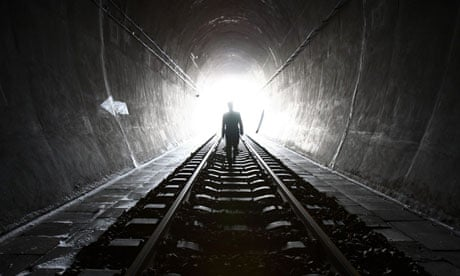

The Internet
A funny thing happened to us on the way to the future. The internet went from being something exotic to being boring utility, like mains electricity or running water – and we never really noticed. So we wound up being totally dependent on a system about which we are terminally incurious. You think I exaggerate about the dependence? Well, just ask Estonia, one of the most internet-dependent countries on the planet, which in 2007 was more or less shut down for two weeks by a sustained attack on its network infrastructure. Or imagine what it would be like if, one day, you suddenly found yourself unable to book flights, transfer funds from your bank account, check bus timetables, send email, search Google, call your family using Skype, buy music from Apple or books from Amazon, buy or sell stuff on eBay, watch clips on YouTube or BBC programmes on the iPlayer – or do the 1,001 other things that have become as natural as breathing.
The internet has quietly infiltrated our lives, and yet we seem to be remarkably unreflective about it. That's not because we're short of information about the network; on the contrary, we're awash with the stuff. It's just that we don't know what it all means. We're in the state once described by that great scholar of cyberspace, Manuel Castells, as "informed bewilderment".
Mainstream media don't exactly help here, because much – if not most – media coverage of the net is negative. It may be essential for our kids' education, they concede, but it's riddled with online predators, seeking children to "groom" for abuse. Google is supposedly "making us stupid" and shattering our concentration into the bargain. It's also allegedly leading to an epidemic of plagiarism. File sharing is destroying music, online news is killing newspapers, and Amazon is killing bookshops. The network is making a mockery of legal injunctions and the web is full of lies, distortions and half-truths. Social networking fuels the growth of vindictive "flash mobs" which ambush innocent columnists such as Jan Moir. And so on.